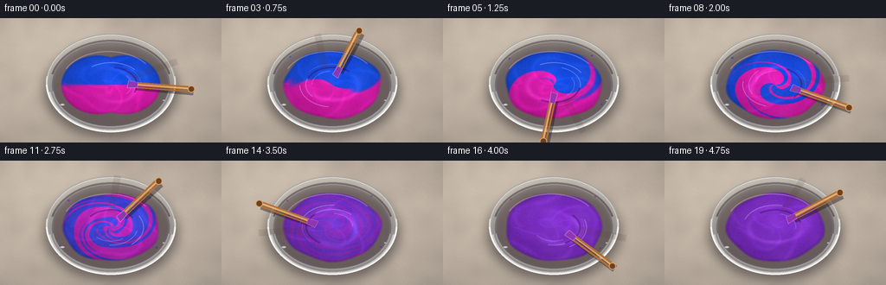
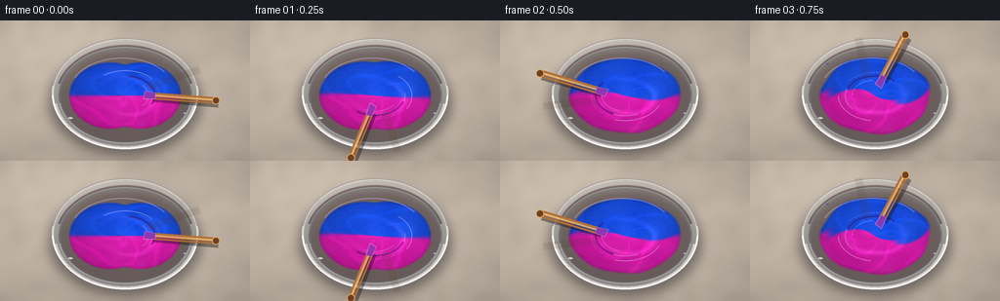

CODING AGENTS AS PIXEL WORLD MODELS
traex/GPT-5.6-Sol · material_0004
点击播放 · 原生 RGB 像素
逐轮保存的候选
回放视频、检查图与代码变化。
每份候选均可单独播放。实际图片检查记录在下方工具轨迹中。
候选 01播放与检查图
点击播放 · 原生 RGB 像素


展开代码变化
--- 上一保存版本
+++ 本次保存版本
@@ -0,0 +1,199 @@
+from pathlib import Path
+import math
+import numpy as np
+import cv2
+from PIL import Image, ImageDraw, ImageFilter
+import artifact_io
+
+# Deterministic procedural text-to-video renderer.
+CASE_DIR = Path(__file__).resolve().parent
+W, H, N, FPS = 256, 144, 20, 4.0
+S = 3
+WW, HH = W*S, H*S
+rng = np.random.default_rng(4127)
+
+# Persistent worktop texture so only the paint action moves.
+yy, xx = np.mgrid[0:HH, 0:WW].astype(np.float32)
+base_noise = rng.normal(0, 1, (HH, WW)).astype(np.float32)
+base_noise = cv2.GaussianBlur(base_noise, (0,0), 7*S)
+fine_noise = rng.normal(0, 1, (HH, WW)).astype(np.float32)
+fine_noise = cv2.GaussianBlur(fine_noise, (0,0), .45*S)
+base_noise /= max(base_noise.std(), 1e-5)
+fine_noise /= max(fine_noise.std(), 1e-5)
+
+def smoothstep(a,b,x):
+ z=np.clip((x-a)/(b-a),0,1)
+ return z*z*(3-2*z)
+
+def sc(v): return int(round(v*S))
+
+def ellipse_box(cx,cy,rx,ry):
+ return (sc(cx-rx),sc(cy-ry),sc(cx+rx),sc(cy+ry))
+
+def line_poly(draw, pts, fill, width, joint='curve'):
+ draw.line([(sc(x),sc(y)) for x,y in pts], fill=fill, width=sc(width), joint=joint)
+
+def render_frame(k):
+ t = k/(N-1)
+ # Warm neutral stone worktop with a gentle vignette and diagonal mineral grain.
+ light = 1.0 - 0.10*((xx-WW*.48)/(WW*.75))**2 - 0.15*((yy-HH*.43)/(HH*.75))**2
+ grain = 2.5*base_noise + 0.75*fine_noise + 1.8*np.sin((xx*.030 + yy*.010)/S)
+ bg = np.empty((HH,WW,3),np.float32)
+ bg[:,:,0]=191*light+grain
+ bg[:,:,1]=178*light+grain*.92
+ bg[:,:,2]=164*light+grain*.80
+ # A soft upper-left studio light.
+ glow=np.exp(-(((xx-WW*.18)/(WW*.43))**2+((yy-HH*.05)/(HH*.55))**2))
+ bg += glow[:,:,None]*np.array([16,15,13],np.float32)
+ bg=np.clip(bg,0,255).astype(np.uint8)
+ im=Image.fromarray(bg,'RGB').convert('RGBA')
+
+ # Contact shadow beneath heavy glass bowl.
+ sh=Image.new('RGBA',(WW,HH),(0,0,0,0)); d=ImageDraw.Draw(sh)
+ d.ellipse(ellipse_box(128,83,77,55),fill=(31,22,28,122))
+ sh=sh.filter(ImageFilter.GaussianBlur(sc(6)))
+ im=Image.alpha_composite(im,sh)
+
+ # Glass bowl body/rim under the paint.
+ bowl=Image.new('RGBA',(WW,HH),(0,0,0,0)); d=ImageDraw.Draw(bowl)
+ d.ellipse(ellipse_box(128,75,75,57), fill=(219,226,228,76), outline=(250,252,250,180), width=sc(2.1))
+ d.ellipse(ellipse_box(128,77,68,49), fill=(66,53,66,48), outline=(105,110,117,145), width=sc(2.0))
+ # subtle glass thickness along bottom
+ d.arc(ellipse_box(128,76,73,55), 10,170,fill=(255,255,255,155),width=sc(2.2))
+ d.arc(ellipse_box(128,78,71,53), 195,345,fill=(76,63,70,115),width=sc(2.3))
+ im=Image.alpha_composite(im,bowl)
+
+ # Paint field in the inner ellipse. Initial equal halves, then tightly wound ribbons,
+ # followed by actual color convergence to a uniform violet.
+ cx,cy=128*S,77*S
+ X=(xx-cx)/(60*S); Y=(yy-cy)/(42*S)
+ r=np.sqrt(X*X+Y*Y)
+ th=np.arctan2(Y,X)
+ p=smoothstep(.03,.79,t) # physical mixing progress
+ settle=smoothstep(.72,.93,t) # final fully blended stage
+ # vigorous nonlinear angular advection: center turns faster than edge
+ rotations=(2.0*t + 4.15*p + 1.35*p*p)
+ material_angle=th - rotations*(1.18-r*.74) - .42*p*np.sin(3*th+8*r-6*t)
+ # Fine folds are added as the two masses are kneaded together.
+ fold=np.sin(material_angle + 1.85*p*np.sin(5*material_angle+10*r) + 5.5*p*r)
+ boundary_soft=.055 + .19*p
+ raw=.5+.5*np.tanh(fold/boundary_soft)
+ # Pigment difference decreases late in the shot; at the end both are violet.
+ contrast=(1-smoothstep(.38,.91,t))**1.13
+ pigment=.5+(raw-.5)*contrast
+ blue=np.array([24,75,219],np.float32)
+ mag=np.array([220,29,173],np.float32)
+ violet=np.array([125,42,194],np.float32)
+ col=blue[None,None,:]*(1-pigment[:,:,None])+mag[None,None,:]*pigment[:,:,None]
+ # Color becomes a richer true purple through blending, rather than merely cross-fading.
+ unify=smoothstep(.53,.92,t)
+ col=col*(1-unify*.56)+violet[None,None,:]*(unify*.56)
+
+ # Thick-paint impasto: spiral ridges, specular bands, and small pigment texture.
+ wake_phase=12.0*r-3.2*th+27*t + 2.0*np.sin(3*th-7*t)
+ ridges=(.5+.5*np.sin(wake_phase))**9
+ broad=np.sin(18*r-5*th+20*t)*.5+.5
+ texture=(2.4*base_noise + 1.3*fine_noise)
+ shade=1 - .17*r*r + .055*np.cos(th+1.0) + .085*ridges + .025*broad
+ col=col*shade[:,:,None]+texture[:,:,None]
+ # creamy moving highlight dragged around by the stirrer
+ highlight=np.exp(-((r-.46-.05*np.sin(th*2+8*t))/.055)**2)*(.5+.5*np.cos(th-8*t))
+ col += highlight[:,:,None]*np.array([25,18,28],np.float32)
+
+ # Slightly breathing/lobed surface edge conveys viscous paint sloshing in the bowl.
+ edge_r=.96 + .018*np.sin(4*th+20*t)+.012*np.sin(7*th-13*t)
+ # First instant: two equal, touching dollops; rapidly flatten to fill the bowl.
+ initial=smoothstep(0,.15,t)
+ lobeL=np.sqrt(((X+.25)/.72)**2+(Y/.83)**2)
+ lobeR=np.sqrt(((X-.25)/.72)**2+(Y/.83)**2)
+ two_lobes=np.minimum(lobeL,lobeR)
+ surface_metric=(1-initial)*two_lobes + initial*(r/edge_r)
+ alpha=np.clip((1.0-surface_metric)*20,0,1)
+ # Darker paint depth at the edge.
+ col *= (0.86+0.14*np.clip((1-surface_metric)*9,0,1))[:,:,None]
+ rgba=np.zeros((HH,WW,4),np.uint8)
+ rgba[:,:,:3]=np.clip(col,0,255).astype(np.uint8)
+ rgba[:,:,3]=(alpha*255).astype(np.uint8)
+ paint=Image.fromarray(rgba,'RGBA')
+ im=Image.alpha_composite(im,paint)
+
+ # Current flow lines and a glossy crescent, clipped approximately to paint area.
+ gloss=Image.new('RGBA',(WW,HH),(0,0,0,0)); gd=ImageDraw.Draw(gloss)
+ # Offset concentric arcs rotate and tighten over time.
+ for j in range(3):
+ rr=38-j*7
+ a0=(235 + k*74 + j*42)%360
+ gd.arc(ellipse_box(128,77,rr,rr*.68),a0,a0+82,fill=(255,231,255,80-j*15),width=sc(1.0))
+ gd.arc(ellipse_box(125,73,54,35),205,324,fill=(255,220,255,72),width=sc(1.4))
+ # dark viscous groove following the stirring orbit
+ a=(k*1.61 + .2*math.sin(k*.8))
+ tipx=128+27*math.cos(a); tipy=77+17*math.sin(a)
+ gd.arc(ellipse_box(128,77,31,21),math.degrees(a)-83,math.degrees(a)+26,fill=(54,12,94,105),width=sc(2.0))
+ gd.arc(ellipse_box(128,77,35,24),math.degrees(a)-65,math.degrees(a)+8,fill=(247,179,255,55),width=sc(.8))
+ im=Image.alpha_composite(im,gloss)
+
+ # Tiny rim splashes emerge during the most vigorous central beat.
+ splash=Image.new('RGBA',(WW,HH),(0,0,0,0)); sd=ImageDraw.Draw(splash)
+ vigor=math.sin(math.pi*smoothstep(.10,.84,t))
+ flecks=[(-50,-31,1.5),(46,-35,1.2),(-57,20,1.0),(54,23,1.4),(-31,40,.9)]
+ for q,(fx,fy,sz) in enumerate(flecks):
+ onset=(q+3)/25
+ if t>onset and t<.90:
+ px=128+fx+2*math.sin(k*.8+q); py=77+fy+1.5*math.cos(k+q)
+ rr=sz*(.65+.45*vigor)
+ c=(106,31,191,185) if q%2 else ((38,71,211,180) if t<.48 else (126,39,193,180))
+ sd.ellipse(ellipse_box(px,py,rr,rr*.72),fill=c)
+ im=Image.alpha_composite(im,splash)
+
+ # Bowl's front glass lip remains visibly in front of paint.
+ rim=Image.new('RGBA',(WW,HH),(0,0,0,0)); rd=ImageDraw.Draw(rim)
+ rd.arc(ellipse_box(128,75,75,57),2,178,fill=(255,255,255,205),width=sc(2.0))
+ rd.arc(ellipse_box(128,77,68,49),9,171,fill=(236,242,246,110),width=sc(1.1))
+ rd.arc(ellipse_box(128,75,75,57),188,352,fill=(83,72,79,100),width=sc(1.3))
+ im=Image.alpha_composite(im,rim)
+
+ # Wooden stirring stick/spatula. The immersed tip follows a fast elliptical orbit.
+ # A translucent previous position is a restrained motion blur cue.
+ tool=Image.new('RGBA',(WW,HH),(0,0,0,0)); td=ImageDraw.Draw(tool)
+ def tool_geometry(ang, extension=1.0):
+ tx=128+27*math.cos(ang); ty=77+17*math.sin(ang)
+ # handle points mostly away from the bowl center, with a slight tangent slant
+ ux,uy=math.cos(ang),math.sin(ang)*.74
+ ln=66*extension
+ ex=tx+ln*ux-8*math.sin(ang); ey=ty+ln*uy+5*math.cos(ang)
+ return tx,ty,ex,ey
+ # blur trail
+ pa=a-1.61*.34
+ ptx,pty,pex,pey=tool_geometry(pa,.88)
+ line_poly(td,[(ptx,pty),(pex,pey)],(80,52,31,30),8)
+ # main stick shadow and body
+ tx,ty,ex,ey=tool_geometry(a)
+ line_poly(td,[(tx+1.8,ty+2),(ex+2.5,ey+3)],(26,17,20,105),8.5)
+ line_poly(td,[(tx,ty),(ex,ey)],(176,111,57,255),7.2)
+ line_poly(td,[(tx-.4,ty-.7),(ex-.4,ey-.8)],(237,184,111,210),2.0)
+ line_poly(td,[(tx+.8,ty+1.5),(ex+.8,ey+1.7)],(98,55,30,125),1.2)
+ # flattened mixing end, submerged and paint-coated
+ vx,vy=tx-ex,ty-ey; norm=max(math.hypot(vx,vy),.001); vx/=norm; vy/=norm
+ px,py=-vy,vx
+ tip_poly=[(sc(tx+vx*7+px*4),sc(ty+vy*7+py*4)),
+ (sc(tx+vx*8-px*4),sc(ty+vy*8-py*4)),
+ (sc(tx-vx*4-px*3),sc(ty-vy*4-py*3)),
+ (sc(tx-vx*4+px*3),sc(ty-vy*4+py*3))]
+ td.polygon(tip_poly,fill=(143,55,174,240))
+ td.line(tip_poly+[tip_poly[0]],fill=(244,151,241,150),width=sc(.7))
+ # Rounded handle cap
+ td.ellipse(ellipse_box(ex,ey,4.1,4.1),fill=(112,64,34,255),outline=(226,166,95,220),width=sc(1))
+ im=Image.alpha_composite(im,tool)
+
+ # A few specular dots on the front rim for glass realism.
+ final=Image.new('RGBA',(WW,HH),(0,0,0,0)); fd=ImageDraw.Draw(final)
+ fd.ellipse(ellipse_box(72,100,2.2,.85),fill=(255,255,255,165))
+ fd.ellipse(ellipse_box(189,95,1.4,.65),fill=(255,255,255,120))
+ im=Image.alpha_composite(im,final)
+
+ im=im.convert('RGB').resize((W,H),Image.Resampling.LANCZOS)
+ return np.asarray(im,dtype=np.uint8)
+
+frames=np.stack([render_frame(k) for k in range(N)],axis=0)
+artifact_io.save(frames, CASE_DIR)
+print(f"saved {frames.shape[0]} RGB frames at {W}x{H}, {FPS:g} fps")
可观测工具轨迹
实际执行的命令与返回图片。
命令 1exit 0
/bin/bash -lc "cat prompt.txt && printf '\\n--- GENERATION_RULES.md ---\\n' && cat GENERATION_RULES.md"
命令 2exit 0
/bin/bash -lc "cat task_spec.json && printf '\\n--- FILES ---\\n' && find . -maxdepth 2 -type f -printf '%p\\n' | sort"
命令 3exit 0
/bin/bash -lc "command -v ffmpeg; command -v python3; python3 - <<'PY' mods=['PIL','numpy','cv2','imageio','moviepy','cairo','moderngl'] for m in mods: try: x=__import__(m); print(m,'OK',getattr(x,'__version__','')) except Exception as e: print(m,'NO',e) PY"
命令 4exit 0
/bin/bash -lc "sed -n '1,260p' artifact_io.py"
命令 5exit 0
/bin/bash -lc "cat > generate.py <<'PY'
from pathlib import Path
import math
import numpy as np
import cv2
from PIL import Image, ImageDraw, ImageFilter
import artifact_io
# Deterministic procedural text-to-video renderer.
CASE_DIR = Path(__file__).resolve().parent
W, H, N, FPS = 256, 144, 20, 4.0
S = 3
WW, HH = W*S, H*S
rng = np.random.default_rng(4127)
# Persistent worktop texture so only the paint action moves.
yy, xx = np.mgrid[0:HH, 0:WW].astype(np.float32)
base_noise = rng.normal(0, 1, (HH, WW)).astype(np.float32)
base_noise = cv2.GaussianBlur(base_noise, (0,0), 7*S)
fine_noise = rng.normal(0, 1, (HH, WW)).astype(np.float32)
fine_noise = cv2.GaussianBlur(fine_noise, (0,0), .45*S)
base_noise /= max(base_noise.std(), 1e-5)
fine_noise /= max(fine_noise.std(), 1e-5)
def smoothstep(a,b,x):
z=np.clip((x-a)/(b-a),0,1)
return z*z*(3-2*z)
def sc(v): return int(round(v*S))
def ellipse_box(cx,cy,rx,ry):
return (sc(cx-rx),sc(cy-ry),sc(cx+rx),sc(cy+ry))
def line_poly(draw, pts, fill, width, joint='curve'):
draw.line([(sc(x),sc(y)) for x,y in pts], fill=fill, width=sc(width), joint=joint)
def render_frame(k):
t = k/(N-1)
# Warm neutral stone worktop with a gentle vignette and diagonal mineral grain.
light = 1.0 - 0.10*((xx-WW*.48)/(WW*.75))**2 - 0.15*((yy-HH*.43)/(HH*.75))**2
grain = 2.5*base_noise + 0.75*fine_noise + 1.8*np.sin((xx*.030 + yy*.010)/S)
bg = np.empty((HH,WW,3),np.float32)
bg[:,:,0]=191*light+grain
bg[:,:,1]=178*light+grain*.92
bg[:,:,2]=164*light+grain*.80
# A soft upper-left studio light.
glow=np.exp(-(((xx-WW*.18)/(WW*.43))**2+((yy-HH*.05)/(HH*.55))**2))
bg += glow[:,:,None]*np.array([16,15,13],np.float32)
bg=np.clip(bg,0,255).astype(np.uint8)
im=Image.fromarray(bg,'RGB').convert('RGBA')
# Contact shadow beneath heavy glass bowl.
sh=Image.new('RGBA',(WW,HH),(0,0,0,0)); d=ImageDraw.Draw(sh)
d.ellipse(ellipse_box(128,83,77,55),fill=(31,22,28,122))
sh=sh.filter(ImageFilter.GaussianBlur(sc(6)))
im=Image.alpha_composite(im,sh)
# Glass bowl body/rim under the paint.
bowl=Image.new('RGBA',(WW,HH),(0,0,0,0)); d=ImageDraw.Draw(bowl)
d.ellipse(ellipse_box(128,75,75,57), fill=(219,226,228,76), outline=(250,252,250,180), width=sc(2.1))
d.ellipse(ellipse_box(128,77,68,49), fill=(66,53,66,48), outline=(105,110,117,145), width=sc(2.0))
# subtle glass thickness along bottom
d.arc(ellipse_box(128,76,73,55), 10,170,fill=(255,255,255,155),width=sc(2.2))
d.arc(ellipse_box(128,78,71,53), 195,345,fill=(76,63,70,115),width=sc(2.3))
im=Image.alpha_composite(im,bowl)
# Paint field in the inner ellipse. Initial equal halves, then tightly wound ribbons,
# followed by actual color convergence to a uniform violet.
cx,cy=128*S,77*S
X=(xx-cx)/(60*S); Y=(yy-cy)/(42*S)
r=np.sqrt(X*X+Y*Y)
th=np.arctan2(Y,X)
p=smoothstep(.03,.79,t) # physical mixing progress
settle=smoothstep(.72,.93,t) # final fully blended stage
# vigorous nonlinear angular advection: center turns faster than edge
rotations=(2.0*t + 4.15*p + 1.35*p*p)
material_angle=th - rotations*(1.18-r*.74) - .42*p*np.sin(3*th+8*r-6*t)
# Fine folds are added as the two masses are kneaded together.
fold=np.sin(material_angle + 1.85*p*np.sin(5*material_angle+10*r) + 5.5*p*r)
boundary_soft=.055 + .19*p
raw=.5+.5*np.tanh(fold/boundary_soft)
# Pigment difference decreases late in the shot; at the end both are violet.
contrast=(1-smoothstep(.38,.91,t))**1.13
pigment=.5+(raw-.5)*contrast
blue=np.array([24,75,219],np.float32)
mag=np.array([220,29,173],np.float32)
violet=np.array([125,42,194],np.float32)
col=blue[None,None,:]*(1-pigment[:,:,None])+mag[None,None,:]*pigment[:,:,None]
# Color becomes a richer true purple through blending, rather than merely cross-fading.
unify=smoothstep(.53,.92,t)
col=col*(1-unify*.56)+violet[None,None,:]*(unify*.56)
# Thick-paint impasto: spiral ridges, specular bands, and small pigment texture.
wake_phase=12.0*r-3.2*th+27*t + 2.0*np.sin(3*th-7*t)
ridges=(.5+.5*np.sin(wake_phase))**9
broad=np.sin(18*r-5*th+20*t)*.5+.5
texture=(2.4*base_noise + 1.3*fine_noise)
shade=1 - .17*r*r + .055*np.cos(th+1.0) + .085*ridges + .025*broad
col=col*shade[:,:,None]+texture[:,:,None]
# creamy moving highlight dragged around by the stirrer
highlight=np.exp(-((r-.46-.05*np.sin(th*2+8*t))/.055)**2)*(.5+.5*np.cos(th-8*t))
col += highlight[:,:,None]*np.array([25,18,28],np.float32)
# Slightly breathing/lobed surface edge conveys viscous paint sloshing in the bowl.
edge_r=.96 + .018*np.sin(4*th+20*t)+.012*np.sin(7*th-13*t)
# First instant: two equal, touching dollops; rapidly flatten to fill the bowl.
initial=smoothstep(0,.15,t)
lobeL=np.sqrt(((X+.25)/.72)**2+(Y/.83)**2)
lobeR=np.sqrt(((X-.25)/.72)**2+(Y/.83)**2)
two_lobes=np.minimum(lobeL,lobeR)
surface_metric=(1-initial)*two_lobes + initial*(r/edge_r)
alpha=np.clip((1.0-surface_metric)*20,0,1)
# Darker paint depth at the edge.
col *= (0.86+0.14*np.clip((1-surface_metric)*9,0,1))[:,:,None]
rgba=np.zeros((HH,WW,4),np.uint8)
rgba[:,:,:3]=np.clip(col,0,255).astype(np.uint8)
rgba[:,:,3]=(alpha*255).astype(np.uint8)
paint=Image.fromarray(rgba,'RGBA')
im=Image.alpha_composite(im,paint)
# Current flow lines and a glossy crescent, clipped approximately to paint area.
gloss=Image.new('RGBA',(WW,HH),(0,0,0,0)); gd=ImageDraw.Draw(gloss)
# Offset concentric arcs rotate and tighten over time.
for j in range(3):
rr=38-j*7
a0=(235 + k*74 + j*42)%360
gd.arc(ellipse_box(128,77,rr,rr*.68),a0,a0+82,fill=(255,231,255,80-j*15),width=sc(1.0))
gd.arc(ellipse_box(125,73,54,35),205,324,fill=(255,220,255,72),width=sc(1.4))
# dark viscous groove following the stirring orbit
a=(k*1.61 + .2*math.sin(k*.8))
tipx=128+27*math.cos(a); tipy=77+17*math.sin(a)
gd.arc(ellipse_box(128,77,31,21),math.degrees(a)-83,math.degrees(a)+26,fill=(54,12,94,105),width=sc(2.0))
gd.arc(ellipse_box(128,77,35,24),math.degrees(a)-65,math.degrees(a)+8,fill=(247,179,255,55),width=sc(.8))
im=Image.alpha_composite(im,gloss)
# Tiny rim splashes emerge during the most vigorous central beat.
splash=Image.new('RGBA',(WW,HH),(0,0,0,0)); sd=ImageDraw.Draw(splash)
vigor=math.sin(math.pi*smoothstep(.10,.84,t))
flecks=[(-50,-31,1.5),(46,-35,1.2),(-57,20,1.0),(54,23,1.4),(-31,40,.9)]
for q,(fx,fy,sz) in enumerate(flecks):
onset=(q+3)/25
if t>onset and t<.90:
px=128+fx+2*math.sin(k*.8+q); py=77+fy+1.5*math.cos(k+q)
rr=sz*(.65+.45*vigor)
c=(106,31,191,185) if q%2 else ((38,71,211,180) if t<.48 else (126,39,193,180))
sd.ellipse(ellipse_box(px,py,rr,rr*.72),fill=c)
im=Image.alpha_composite(im,splash)
# Bowl's front glass lip remains visibly in front of paint.
rim=Image.new('RGBA',(WW,HH),(0,0,0,0)); rd=ImageDraw.Draw(rim)
rd.arc(ellipse_box(128,75,75,57),2,178,fill=(255,255,255,205),width=sc(2.0))
rd.arc(ellipse_box(128,77,68,49),9,171,fill=(236,242,246,110),width=sc(1.1))
rd.arc(ellipse_box(128,75,75,57),188,352,fill=(83,72,79,100),width=sc(1.3))
im=Image.alpha_composite(im,rim)
# Wooden stirring stick/spatula. The immersed tip follows a fast elliptical orbit.
# A translucent previous position is a restrained motion blur cue.
tool=Image.new('RGBA',(WW,HH),(0,0,0,0)); td=ImageDraw.Draw(tool)
def tool_geometry(ang, extension=1.0):
tx=128+27*math.cos(ang); ty=77+17*math.sin(ang)
# handle points mostly away from the bowl center, with a slight tangent slant
ux,uy=math.cos(ang),math.sin(ang)*.74
ln=66*extension
ex=tx+ln*ux-8*math.sin(ang); ey=ty+ln*uy+5*math.cos(ang)
return tx,ty,ex,ey
# blur trail
pa=a-1.61*.34
ptx,pty,pex,pey=tool_geometry(pa,.88)
line_poly(td,[(ptx,pty),(pex,pey)],(80,52,31,30),8)
# main stick shadow and body
tx,ty,ex,ey=tool_geometry(a)
line_poly(td,[(tx+1.8,ty+2),(ex+2.5,ey+3)],(26,17,20,105),8.5)
line_poly(td,[(tx,ty),(ex,ey)],(176,111,57,255),7.2)
line_poly(td,[(tx-.4,ty-.7),(ex-.4,ey-.8)],(237,184,111,210),2.0)
line_poly(td,[(tx+.8,ty+1.5),(ex+.8,ey+1.7)],(98,55,30,125),1.2)
# flattened mixing end, submerged and paint-coated
vx,vy=tx-ex,ty-ey; norm=max(math.hypot(vx,vy),.001); vx/=norm; vy/=norm
px,py=-vy,vx
tip_poly=[(sc(tx+vx*7+px*4),sc(ty+vy*7+py*4)),
(sc(tx+vx*8-px*4),sc(ty+vy*8-py*4)),
(sc(tx-vx*4-px*3),sc(ty-vy*4-py*3)),
(sc(tx-vx*4+px*3),sc(ty-vy*4+py*3))]
td.polygon(tip_poly,fill=(143,55,174,240))
td.line(tip_poly+[tip_poly[0]],fill=(244,151,241,150),width=sc(.7))
# Rounded handle cap
td.ellipse(ellipse_box(ex,ey,4.1,4.1),fill=(112,64,34,255),outline=(226,166,95,220),width=sc(1))
im=Image.alpha_composite(im,tool)
# A few specular dots on the front rim for glass realism.
final=Image.new('RGBA',(WW,HH),(0,0,0,0)); fd=ImageDraw.Draw(final)
fd.ellipse(ellipse_box(72,100,2.2,.85),fill=(255,255,255,165))
fd.ellipse(ellipse_box(189,95,1.4,.65),fill=(255,255,255,120))
im=Image.alpha_composite(im,final)
im=im.convert('RGB').resize((W,H),Image.Resampling.LANCZOS)
return np.asarray(im,dtype=np.uint8)
frames=np.stack([render_frame(k) for k in range(N)],axis=0)
artifact_io.save(frames, CASE_DIR)
print(f\"saved {frames.shape[0]} RGB frames at {W}x{H}, {FPS:g} fps\")
PY
python3 generate.py
python3 - <<'PY'
import numpy as np
from PIL import Image
x=np.load('pixels.npz')['pixels']
print('pixels',x.shape,x.dtype,'files OK')
print('frame png',Image.open('frames/00.png').mode,Image.open('frames/00.png').size)
PY"命令 6exit 0
/bin/bash -lc "python3 -m py_compile generate.py && python3 - <<'PY'
from pathlib import Path
import numpy as np
from PIL import Image
fs=sorted((Path('frames')).glob('*.png'))
assert len(fs)==20
for f in fs:
im=Image.open(f)
assert im.mode=='RGB' and im.size==(256,144)
arr=np.stack([np.asarray(Image.open(f),dtype=np.int16) for f in fs])
mad=np.abs(np.diff(arr,axis=0)).mean(axis=(1,2,3))
print('artifacts:', ', '.join(p.name for p in [Path('pixels.npz'),Path('index.html'),Path('inspection.png'),Path('transition_check.png')] if p.exists()))
print('20/20 RGB frames valid; temporal MAD range %.2f..%.2f, mean %.2f' % (mad.min(),mad.max(),mad.mean()))
print('sizes:', {p.name:p.stat().st_size for p in [Path('pixels.npz'),Path('index.html'),Path('inspection.png')]})
PY"视觉工具实际返回图片 1

视觉工具实际返回图片 2

保存候选 1 份；完成命令 6 次；可验证图片返回 2 张。原始 API 响应与完整日志保留在本地。